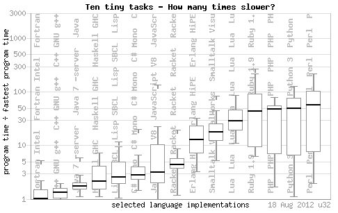
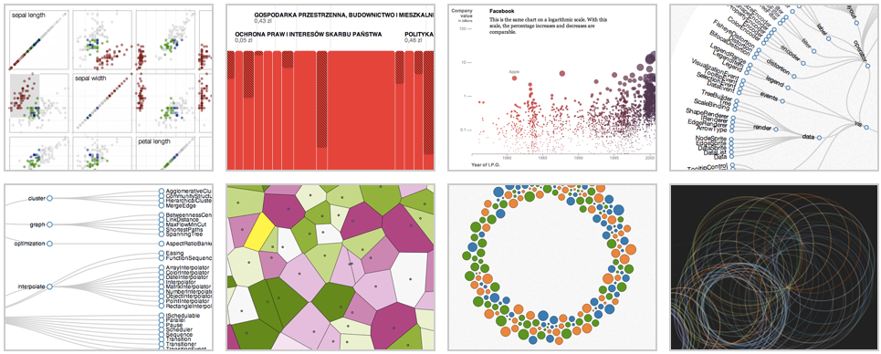
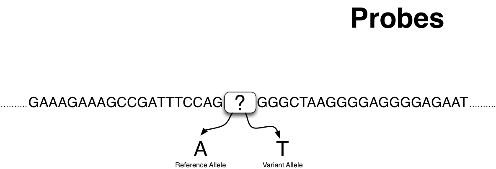
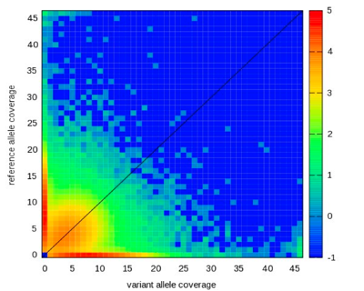

Bringing data to life with
d3js
Intro
d3js is a Javascript library to manipulate elements of a document based on data.
It is NOT a charting library.
Created by Michael Bostock
Elements: HTML, SVG.
SVG: XML-based format specification for rendering two dimensional vector graphics.
Vector graphics: Use of geometrical primitives (points, lines, curves ...) to represent images.
d3js vizs typically against the SVG engine
↦ Better performance
↦ Expressiveness
Why d3js?
Benefit from Mike's research on visualization
D3 is the final result, after other great tools like protovis.
No new ways to represent an image.
Vocabulary comes directly from web standards.
If you learn D3 you will have to learn web standards (SVG, CSS, HTML) and ...
Javascript
A good learning investment.
Javascript is getting faster, thanks to google's development of Chrome's Engine, V8. 
The initial learning curve is steep but after that you will have great level of control of your visualizations.
It exposes the SVG engine in a pleasant and enjoyable way.
A simple viz
Based on mike's excellent bar-char tutorial
<!DOCTYPE html>
<html>
<head>
<meta charset="utf-8">
<script src="d3.js"></script>
<script>
function myViz(data) {
// super awesome code here
}
</script>
</head>
<body>
<script>
d3.json("data/some_great_data.json", myViz);
</script>
</body>
</html>
Our dataset
var data = [4, 8, 15, 16, 23, 42];
Create our SVG container
var chart = d3.select("body").append("svg")
.attr("class", "chart")
.attr("width", 420)
.attr("height", 20 * data.length);
Scale to map (map from input domain to an output range)
var x = d3.scale.linear()
.domain([0, d3.max(data)])
.range([0, 420]);
Same for the y axis
var y = d3.scale.ordinal()
.domain(data)
.rangeBands([0, 120]);
The bars in our barchar:
chart.selectAll("rect")
.data(data)
.enter().append("rect")
.attr("y", y)
.attr("width", x)
.attr("height", 20);
let's style the elements we just created
.chart {
font: 10px sans-serif;
background-color: white;
text-align: right;
padding: 3px;
margin: 1px;
color: steelblue;
}
.chart rect {
stroke: white;
fill: steelblue;
}
And this is what we have so far:
var data = [4, 8, 15, 16, 23, 42];
var chart = d3.select("#body").append("svg")
.attr("class", "chart")
.attr("width", 420)
.attr("height", 20 * data.length);
var x = d3.scale.linear()
.domain([0, d3.max(data)])
.range([0, 420]);
var y = d3.scale.ordinal()
.domain(data)
.rangeBands([0, 120]);
chart.selectAll("rect")
.data(data)
.enter().append("rect")
.attr("y", y)
.attr("width", x)
.attr("height", 20);
Let's add now some text
chart.selectAll("text")
.data(data)
.enter().append("text")
.attr("x", x)
.attr("y", function(d) { return y(d) + y.rangeBand() / 2; })
.attr("dx", -3) // padding-right
.attr("dy", ".35em") // vertical-align: middle
.attr("text-anchor", "end") // text-align: right
.text(String);
Let's style the text we just added.
.chart text {
stroke: white;
}
And this is what we have so far:
var data = [4, 8, 15, 16, 23, 42];
var chart = d3.select("#body").append("svg")
.attr("class", "chart")
.attr("width", 420)
.attr("height", 20 * data.length);
var x = d3.scale.linear()
.domain([0, d3.max(data)])
.range([0, 420]);
var y = d3.scale.ordinal()
.domain(data)
.rangeBands([0, 120]);
chart.selectAll("rect")
.data(data)
.enter().append("rect")
.attr("y", y)
.attr("width", x)
.attr("height", 20);
chart.selectAll("text")
.data(data)
.enter().append("text")
.attr("x", x)
.attr("y", function(d) { return y(d) + y.rangeBand() / 2; })
.attr("dx", -3) // padding-right
.attr("dy", ".35em") // vertical-align: middle
.attr("text-anchor", "end") // text-align: right
.text(String);
}
Let's add some marks now
chart.selectAll("line")
.data(x.ticks(10))
.enter().append("line")
.attr("x1", x)
.attr("x2", x)
.attr("y1", 0)
.attr("y2", 120)
.style("stroke", "#ccc");
chart.selectAll(".rule")
.data(x.ticks(10))
.enter().append("text")
.attr("class", "rule")
.attr("x", x)
.attr("y", 0)
.attr("dy", -3)
.attr("text-anchor", "middle")
.text(String);
chart.append("line")
.attr("y1", 0)
.attr("y2", 120)
.style("stroke", "#000");
The final result:
... with a minor modification (svg 'g' element)
var chart = d3.select("#body").append("svg")
.attr("class", "chart")
.attr("width", 420)
.attr("height", 20 * data.length)
.append("g")
.attr("transform", "translate(10,15)");
var x = d3.scale.linear()
.domain([0, d3.max(data)])
.range([0, 420]);
var y = d3.scale.ordinal()
.domain(data)
.rangeBands([0, 120]);
chart.selectAll("line")
.data(x.ticks(10))
.enter().append("line")
.attr("x1", x)
.attr("x2", x)
.attr("y1", 0)
.attr("y2", 120)
.style("stroke", "#ccc");
chart.selectAll("rect")
.data(data)
.enter().append("rect")
.attr("y", y)
.attr("width", x)
.attr("height", 20);
chart.selectAll("text")
.data(data)
.enter().append("text")
.attr("x", x)
.attr("y", function(d) { return y(d) + y.rangeBand() / 2; })
.attr("dx", -3) // padding-right
.attr("dy", ".35em") // vertical-align: middle
.attr("text-anchor", "end") // text-align: right
.text(String);
chart.selectAll(".rule")
.data(x.ticks(10))
.enter().append("text")
.attr("class", "rule")
.attr("x", x)
.attr("y", 0)
.attr("dy", -3)
.attr("text-anchor", "middle")
.text(String);
chart.append("line")
.attr("y1", 0)
.attr("y2", 120)
.style("stroke", "#000");
Demos
Those machines(sequencers) generate billions of small strings of DNA (reads)
Reads are aligned back to the reference genome (More data)
The accumulation of those reads and its alignments are packed in BAM files.
These BAMs are the input for all downstream analysis.
We have to make sure the data is correct
I wanted to make easy the detection of anomalies in these data...
Let's see it in action ...
eg.js

We could create a list of those probes and screen our reads for hits.
Genotyping: Find the alleles on those locations for a particular sample.
E-genotype was born. A standalone tool to quickly genotype next-gen sequencing data.
Input: probes and reads.
Output: hits to those probes for the set of reads.
$ head counts.csv 3,187080482,rs6809601,T,C,0,0,0,0,0,0,1,0,0,0,0,1,0,0,0 9,83526867,rs1471723,G,C,0,0,0,0,0,0,1,0,0,0,0,1,0,0,0 1,193412546,rs599140,T,C,0,0,0,0,0,1,0,0,0,0,1,0,0,0,0 22,23680087,rs4140486,A,G,1,0,0,0,0,1,0,0,0,0,2,0,0,0,0 1,149638762,rs7172,G,A,0,1,0,0,0,0,0,0,0,0,0,1,0,0,0 4,170686155,rs10010203,A,G,0,0,0,0,0,1,0,0,0,0,1,0,0,0,0 3,187826181,rs13080283,G,A,2,0,0,0,0,0,0,0,0,0,2,0,0,0,0 4,8985664,rs9291627,T,C,0,0,0,0,0,0,1,0,0,0,0,1,0,0,0 13,103914442,rs7322187,G,A,0,0,0,0,0,1,0,0,0,0,1,0,0,0,0 8,4567331,rs17346747,G,A,0,0,0,0,0,0,1,0,0,0,0,1,0,0,0 ...

Realtime read streaming
Why not preforming the visualization in realtime as reads are screened?
eg.js was born.
Reimplemented Egenotype's engine in Javascript (node.js).
The server waits for web clients to come in.
When new connections, hits are sent to the clients (socket.io).
And a heatmap of the hits is visualized and updated in realtime (d3.js).
Let's see it in action ...
Thanks!
Much more: https://github.com/mbostock/d3/wiki
Questions?